视频地址
ElasticSearch 7.14-分布式搜索引擎
全文检索
简介
安装
kibana
核心概念 索引 映射 文档
高级查询 Query DSL
索引原理
分词器
过滤查询
聚合查询
整合应用
集群
全文检索 全文检索是计算机程序通过扫描文章中的每一个词，对每一个词建立一个索引，指明该词在文章中出现的次数和位置。当用户查询时根据建立的索引查找，类似于通过字典的检索字表查字的过程。
索: 建立索引 文本—->切分 —> 词 文章出现过 出现多少次
检索: 查询 关键词—> 索引中–> 符合条件文章 相关度排序
全文检索(Full-Text Retrieval)以文本作为检索对象，找出含有指定词汇的文本。全面、准确和快速是衡量全文检索系统的关键指标。
只处理文本、不处理语义 搜索时英文不区分大小写 结果列表有相关度排序
简介 什么是ElasticSearch ElasticSearch 简称 ES ，是基于Apache Lucene构建的开源搜索引擎，是当前最流行的企业级搜索引擎。Lucene本身就可以被认为迄今为止性能最好的一款开源搜索引擎工具包，但是lucene的API相对复杂，需要深厚的搜索理论。很难集成到实际的应用中去。ES是采用java语言编写，提供了简单易用的RestFul API，开发者可以使用其简单的RestFul API，开发相关的搜索功能，从而避免lucene的复杂性。
ElasticSearch诞生 多年前，一个叫做Shay Banon的刚结婚不久的失业开发者，由于妻子要去伦敦学习厨师，他便跟着也去了。在他找工作的过程中，为了给妻子构建一个食谱的搜索引擎，他开始构建一个早期版本的Lucene。
直接基于Lucene工作会比较困难，所以Shay开始抽象Lucene代码以便Java程序员可以在应用中添加搜索功能。他发布了他的第一个开源项目，叫做“Compass”。
后来Shay找到一份工作，这份工作处在高性能和内存数据网格的分布式环境中，因此高性能的、实时的、分布式的搜索引擎也是理所当然需要的。然后他决定重写Compass库使其成为一个独立的服务叫做Elasticsearch。
第一个公开版本出现在2010年2月，在那之后Elasticsearch已经成为Github上最受欢迎的项目之一，代码贡献者超过300人。一家主营Elasticsearch的公司就此成立，他们一边提供商业支持一边开发新功能，不过Elasticsearch将永远开源且对所有人可用。
Shay的妻子依旧等待着她的食谱搜索……
目前国内大厂几乎无一不用Elasticsearch，阿里，腾讯，京东，美团 等等 …..
安装
传统方式安装 下载安装包—> 平台 window macos linux(ubuntu)
Docker 方式安装 推荐
传统方式安装 1 2 3 4 5 6 # 0.环境准备 - centos7.x+、ubuntu、windows、macos- 安装jdk11.0+ 并配置环境变量 jdk8 # 1.下载ES - https://www.elastic.co/cn/start
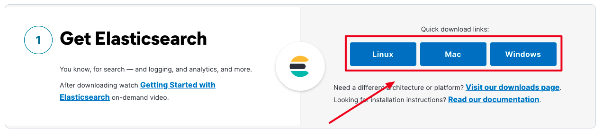
1 # 2.安装ES不用使用root用户,创建普通用户
1 2 3 4 5 # 添加用户名 $ useradd chenyn # 修改密码 $ passwd chenyn # 普通用户登录
1 2 3 4 $ tar -zxvf elasticsearch-7.14.0-linux-x86_64.tar.gz $ ll 总用量 650168 drwxr-xr-x. 10 chenyn chenyn 167 8月 16 11:07 elasticsearch-7.14.0
1 2 3 4 5 6 7 8 9 [chenyn@localhost elasticsearch-7.14.0]$ ll - bin 启动ES服务脚本目录 - config ES配置文件的目录 - data ES的数据存放目录 - jdk ES提供需要指定的jdk目录 - lib ES依赖第三方库的目录 - logs ES的日志目录 - modules 模块的目录 - plugins 插件目录
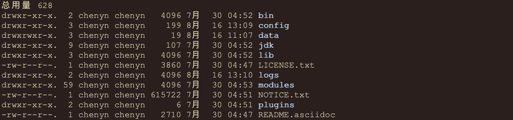
1 [chenyn@localhost ~]$ ./elasticsearch-7.14.0/bin/elasticsearch
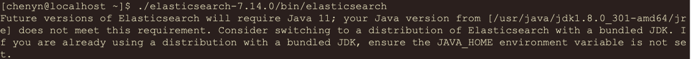
1 2 3 4 - 这个错误时系统jdk版本与es要求jdk版本不一致,es默认需要jdk11以上版本,当前系统使用的jdk8,需要从新安装jdk11才行!- 解决方案: 1.安装jdk11+ 配置环境变量、 2.ES包中jdk目录就是es需要jdk,只需要将这个目录配置到ES_JAVA_HOME环境变即可、
1 2 3 $ vim /etc/profile - export ES_JAVA_HOME=指定为ES安装目录中jdk目录 - source /etc/profile
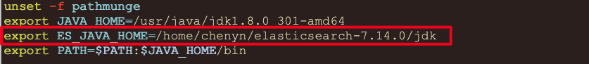
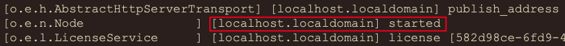
1 # 8.ES启动默认监听9200端口,访问9200
1 $ curl http://localhost:9200
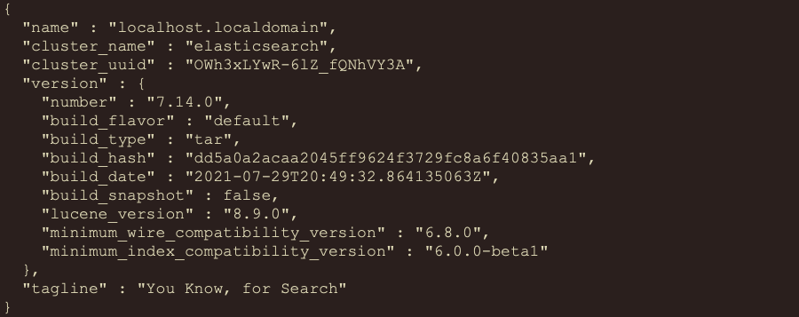
后台启动
1 [wangjian@localhost bin]$ ./elasticsearch -d
开启远程访问 1 2 # 1.默认ES无法使用主机ip进行远程连接,需要开启远程连接权限 - 修改ES安装包中config/elasticsearch.yml配置文件
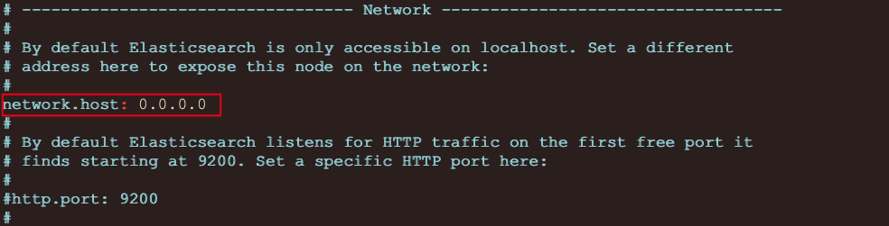
1 2 3 4 5 6 7 # 2.重新启动ES服务 - ./elasticsearch- 启动出现如下错误: `bootstrap check failure [1] of [4]: max file descriptors [4096] for elasticsearch process is too low, increase to at least [65535] `bootstrap check failure [2] of [4]: max number of threads [3802] for user [chenyn] is too low, increase to at least [4096] `bootstrap check failure [3] of [4]: max virtual memory areas vm.max_map_count [65530] is too low, increase to at least [262144] `bootstrap check failure [4] of [4]: the default discovery settings are unsuitable for production use; at least one of [discovery.seed_hosts, discovery.seed_providers
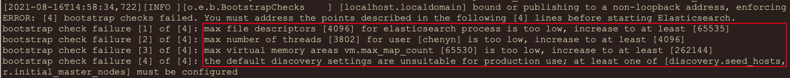
1 $ vim /etc/security/limits.conf
1 2 3 4 5 6 7 8 9 10 11 12 13 14 15 16 17 18 19 20 21 22 23 # 每个进程最大同时打开文件数太小，可通过下面命令查看当前数量 [wangjian@localhost security]$ ulimit -Hn 4096 [wangjian@localhost security]$ ulimit -Sn 1024 [wangjian@localhost security]$ ulimit -Hu 3756 [wangjian@localhost security]$ ulimit -Su 3756 # 在最后面追加下面内容 * soft nofile 65536* hard nofile 65536* soft nproc 4096* hard nproc 4096# 退出重新登录检测配置是否生效(命令行执行): [root@localhost security]# ulimit -Hn 65536 [root@localhost security]# ulimit -Sn 65536 [root@localhost security]# ulimit -Hu 4096 [root@localhost security]# ulimit -Su 4096
1 2 3 4 # 进入limits.d目录下修改配置文件。 $ vim /etc/security/limits.d/20-nproc.conf # 修改为 启动ES用户名 soft nproc 4096
1 2 3 4 5 6 # 编辑sysctl.conf文件 $ vim /etc/sysctl.conf vm.max_map_count=655360 #centos7 系统 vm.max_map_count=262144 #ubuntu 系统 # 执行以下命令生效： $ sysctl -p
1 2 3 # 编辑elasticsearch.yml配置文件 $ vim config/elasticsearch.yml cluster.initial_master_nodes: ["node-1"]
http://192.168.58.128:9200/
*注意：需要服务器开启端口或者关闭防火墙
1 2 3 4 5 6 7 8 9 10 11 12 13 14 15 16 17 { "name" : "localhost.localdomain" , "cluster_name" : "elasticsearch" , "cluster_uuid" : "OWh3xLYwR-6lZ_fQNhVY3A" , "version" : { "number" : "7.14.0" , "build_flavor" : "default" , "build_type" : "tar" , "build_hash" : "dd5a0a2acaa2045ff9624f3729fc8a6f40835aa1" , "build_date" : "2021-07-29T20:49:32.864135063Z" , "build_snapshot" : false , "lucene_version" : "8.9.0" , "minimum_wire_compatibility_version" : "6.8.0" , "minimum_index_compatibility_version" : "6.0.0-beta1" } , "tagline" : "You Know, for Search" }
Docker方式安装 1 2 3 4 5 6 7 8 # 1.获取镜像 - docker pull elasticsearch:7.14.0# 2.运行es - docker run -d -p 9200:9200 -p 9300:9300 -e "discovery.type=single-node" elasticsearch:7.14.0# 3.访问ES - http://10.15.0.5:9200/
Kibana APIPost 和 postman 都可以，只是这两个没有提示，推荐官方推荐使用的 kibana 工具。
简介 Kibana Navicat是一个针对Elasticsearch mysql的开源分析及可视化平台，使用Kibana可以查询、查看并与存储在ES索引的数据进行交互操作，使用Kibana能执行高级的数据分析，并能以图表、表格和地图的形式查看数据。
安装 传统方式安装 1 2 3 4 5 6 7 8 9 10 11 12 13 14 15 16 17 18 19 * 注意:不能使用 root 用户# 1. 下载Kibana - https://www.elastic.co/downloads/kibana# 2. 安装下载的kibana - $ tar -zxvf kibana-7.14.0-linux-x86_64.tar.gz # 3. 编辑kibana配置文件 - $ vim /Kibana 安装目录中 config 目录/kibana/kibana.yml # 4. 修改如下配置 - server.host: "0.0.0.0" # 开启kibana远程访问 - elasticsearch.hosts: ["http://localhost:9200"] #ES服务器地址 # 5. 启动kibana - ./bin/kibana # 6. 访问kibana的web界面 - http://10.15.0.5:5601/ #kibana默认端口为5601
Docker方式安装 1 2 3 4 5 6 7 8 9 10 11 12 13 14 # 1.获取镜像 - docker pull kibana:7.14.0# 2.运行kibana - docker run -d --name kibana -p 5601:5601 kibana:7.14.0# 3.进入容器连接到ES,重启kibana容器,访问 - http://10.15.0.3:5601# 4.基于数据卷加载配置文件方式运行 - a.从容器复制kibana配置文件出来- b.修改配置文件为对应ES服务器地址- c.通过数据卷加载配置文件方式启动 `docker run -d -v /root/kibana.yml:/usr/share/kibana/config/kibana.yml --name kibana -p 5601:5601 kibana:7.14.0
compose方式安装 1 2 3 4 5 6 7 8 9 10 11 12 13 14 15 16 17 18 19 20 21 22 23 24 25 26 27 28 29 30 31 version: "3.8" volumes: data: config: plugin: networks: es: services: elasticsearch: image: elasticsearch:7.14.0 ports: - "9200:9200" - "9300:9300" networks: - "es" environment: - "discovery.type=single-node" - "ES_JAVA_OPTS=-Xms512m -Xmx512m" volumes: - data:/usr/share/elasticsearch/data - config:/usr/share/elasticsearch/config - plugin:/usr/share/elasticsearch/plugins kibana: image: kibana:7.14.0 ports: - "5601:5601" networks: - "es" volumes: - ./kibana.yml:/usr/share/kibana/config/kibana.yml
1 2 3 4 5 server.host: "0" server.shutdownTimeout: "5s" elasticsearch.hosts: [ "http://elasticsearch:9200" ]monitoring.ui.container.elasticsearch.enabled: true
核心概念 索引 <Index> 一个索引就是一个拥有几分相似特征的文档的集合。比如说，你可以有一个商品数据的索引，一个订单数据的索引，还有一个用户数据的索引。 一个索引由一个名字来标识(必须全部是小写字母的)， 并且当我们要对这个索引中的文档进行索引、搜索、更新和删除的时候，都要使用到这个名字。
映射<Mapping> **映射是定义一个文档和它所包含的字段如何被存储和索引的过程**。在默认配置下，ES可以根据插入的数据自动地创建mapping，也可以手动创建mapping。 mapping中主要包括字段名、字段类型等
文档<Document> **文档是索引中存储的一条条数据。一条文档是一个可被索引的最小单元**。ES中的文档采用了轻量级的JSON格式数据来表示。
基本操作 索引<index> 索引只能是被删除，不能被修改。
创建 1 2 3 4 5 6 7 8 9 10 11 12 13 14 # 1.创建索引 - PUT /索引名 ====> PUT /products- 注意: 1.ES中索引健康转态 red(索引不可用) 、yellwo(索引可用,存在风险)、green(健康) 2.默认ES在创建索引时回为索引创建1个备份索引和一个primary索引 # 2.创建索引 进行索引分片配置 - PUT /products { "settings": { "number_of_shards": 1, #指定主分片的数量 "number_of_replicas": 0 #指定副本分片的数量 } }
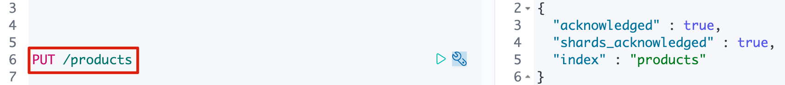
查询 1 2 # 查询索引 - GET /_cat/indices?v
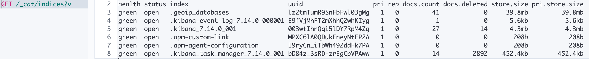
删除 1 2 3 # 3.删除索引 - DELETE /索引名 =====> DELETE /products- DELETE /* `* 代表通配符,代表所有索引`
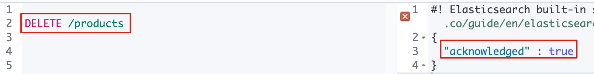
映射<mapping> 一般创建索引的时候，创建映射！
创建 字符串类型: keyword 关键字 关键词 、text 一段文本
数字类型：integer long
小数类型：float double
布尔类型：boolean
日期类型：date
1 2 3 4 5 6 7 8 9 10 11 12 13 14 15 16 17 18 19 20 21 22 23 PUT /products { "settings" : { "number_of_shards" : 1 , "number_of_replicas" : 0 } , "mappings" : { "properties" : { "title" : { "type" : "keyword" } , "price" : { "type" : "double" } , "created_at" : { "type" : "date" } , "description" : { "type" : "text" } } } }
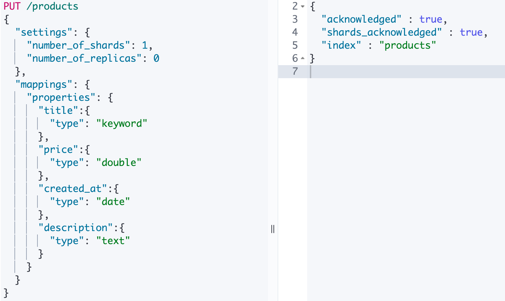
说明: ES中支持字段类型非常丰富，如：text、keyword、integer、long、ip 等。更多参见https://www.elastic.co/guide/en/elasticsearch/reference/7.15/mapping-types.html
查询 1 2 # 1.查看某个索引的映射 - GET /索引名/_mapping =====> GET /products/_ mapping
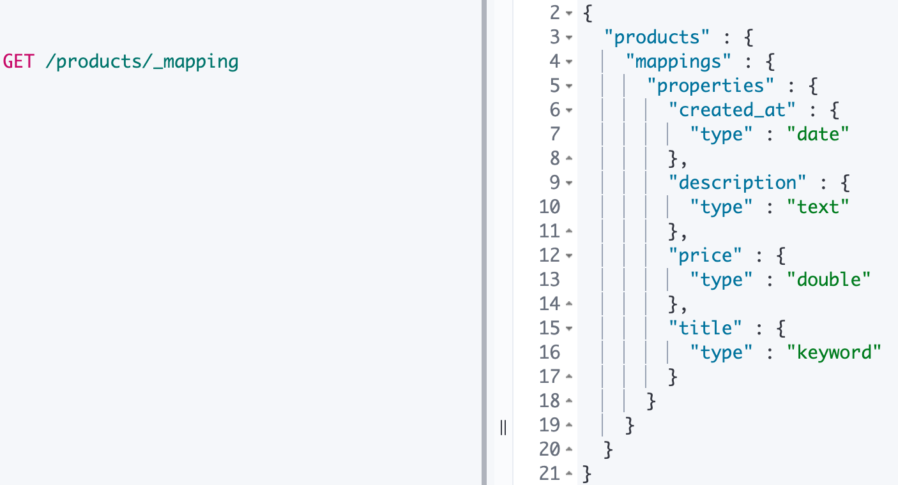
文档<document> 添加文档 1 2 3 4 5 6 7 POST /products/_doc/1 #指定文档id { "title":"iphone13", "price":8999.99, "created_at":"2021-09-15", "description":"iPhone 13屏幕采用6.1英寸OLED屏幕。" }
1 2 3 4 5 6 7 POST /products/_doc/ #自动生成文档id { "title":"iphone14", "price":8999.99, "created_at":"2021-09-15", "description":"iPhone 13屏幕采用6.8英寸OLED屏幕" }
1 2 3 4 5 6 7 8 9 10 11 12 13 14 { "_index" : "products" , "_type" : "_doc" , "_id" : "sjfYnXwBVVbJgt24PlVU" , "_version" : 1 , "result" : "created" , "_shards" : { "total" : 1 , "successful" : 1 , "failed" : 0 } , "_seq_no" : 3 , "_primary_term" : 1 }
查询文档 1 2 3 4 5 6 7 8 9 10 11 12 13 14 15 { "_index" : "products" , "_type" : "_doc" , "_id" : "1" , "_version" : 1 , "_seq_no" : 0 , "_primary_term" : 1 , "found" : true , "_source" : { "title" : "iphone13" , "price" : 8999.99 , "created_at" : "2021-09-15" , "description" : "iPhone 13屏幕采用6.1英寸OLED屏幕" } }
删除文档 1 2 3 4 5 6 7 8 9 10 11 12 13 14 { "_index" : "products" , "_type" : "_doc" , "_id" : "1" , "_version" : 2 , "result" : "deleted" , "_shards" : { "total" : 1 , "successful" : 1 , "failed" : 0 } , "_seq_no" : 2 , "_primary_term" : 1 }
更新文档 1 2 3 4 PUT /products/_doc/sjfYnXwBVVbJgt24PlVU { "title":"iphon15" }
说明: 这种更新方式是先删除原始文档,在将更新文档以新的内容插入。
1 2 3 4 5 6 POST /products/_doc/sjfYnXwBVVbJgt24PlVU/_update { "doc" : { "title" : "iphon15" } }
说明: 这种方式可以将数据原始内容保存,并在此基础上更新。
批量操作 1 2 3 4 5 POST /products/_doc/_bulk #批量索引两条文档 {"index":{"_id":"1"}} {"title":"iphone14","price":8999.99,"created_at":"2021-09-15","description":"iPhone 13屏幕采用6.8英寸OLED屏幕"} {"index":{"_id":"2"}} {"title":"iphone15","price":8999.99,"created_at":"2021-09-15","description":"iPhone 15屏幕采用10.8英寸OLED屏幕"}
1 2 3 4 5 6 POST /products/_doc/_bulk #更新文档同时删除文档 {"update":{"_id":"1"}} {"doc":{"title":"iphone17"}} {"delete":{"_id":2}} {"index":{}} {"title":"iphone19","price":8999.99,"created_at":"2021-09-15","description":"iPhone 19屏幕采用61.8英寸OLED屏幕"}
说明:批量时不会因为一个失败而全部失败,而是继续执行后续操作,在返回时按照执行的状态返回!
高级查询 说明 ES中提供了一种强大的检索数据方式,这种检索方式称之为Query DSL ,Query DSL是利用Rest API传递JSON格式的请求体(Request Body)数据与ES进行交互，这种方式的丰富查询语法让ES检索变得更强大，更简洁。
语法 1 2 # GET /索引名/_doc/_ search {json格式请求体数据} # GET /索引名/_search {json格式请求体数据}
1 2 3 4 5 6 7 8 9 10 11 12 13 14 15 16 17 18 19 20 21 22 23 24 25 26 27 28 29 30 # 1.创建索引 映射 PUT /products/ { "mappings": { "properties": { "title":{ "type": "keyword" }, "price":{ "type": "double" }, "created_at":{ "type":"date" }, "description":{ "type":"text" } } } } # 2.测试数据 PUT /products/_doc/_bulk {"index":{}} {"title":"iphone12 pro","price":8999,"created_at":"2020-10-23","description":"iPhone 12 Pro采用超瓷晶面板和亚光质感玻璃背板，搭配不锈钢边框，有银色、石墨色、金色、海蓝色四种颜色。宽度:71.5毫米，高度:146.7毫米，厚度:7.4毫米，重量：187克"} {"index":{}} {"title":"iphone12","price":4999,"created_at":"2020-10-23","description":"iPhone 12 高度：146.7毫米；宽度：71.5毫米；厚度：7.4毫米；重量：162克（5.73盎司） [5] 。iPhone 12设计采用了离子玻璃，以及7000系列铝金属外壳。"} {"index":{}} {"title":"iphone13","price":6000,"created_at":"2021-09-15","description":"iPhone 13屏幕采用6.1英寸OLED屏幕；高度约146.7毫米，宽度约71.5毫米，厚度约7.65毫米，重量约173克。"} {"index":{}} {"title":"iphone13 pro","price":8999,"created_at":"2021-09-15","description":"iPhone 13Pro搭载A15 Bionic芯片，拥有四种配色，支持5G。有128G、256G、512G、1T可选，售价为999美元起。"}
常见检索 查询所有[match_all]
match_all关键字: 返回索引中的全部文档
1 2 3 4 5 6 GET /products/_search { "query": { "match_all": {} } }
关键词查询(term)
term 关键字 : 用来使用关键词查询
1 2 3 4 5 6 7 8 9 10 GET /products/_search { "query": { "term": { "price": { "value": 4999 } } } }
NOTE1: 通过使用term查询得知ES中默认使用分词器为标准分词器(StandardAnalyzer),标准分词器对于英文单词分词,对于中文单字分词。
NOTE2: 通过使用term查询得知,在ES的Mapping Type 中 keyword , date ,integer, long , double , boolean or ip 这些类型不分词，只有text类型分词。
范围查询[range]
range 关键字 : 用来指定查询指定范围内的文档
1 2 3 4 5 6 7 8 9 10 11 GET /products/_search { "query": { "range": { "price": { "gte": 1400, "lte": 9999 } } } }
前缀查询[prefix]
prefix 关键字 : 用来检索含有指定前缀的关键词的相关文档
1 2 3 4 5 6 7 8 9 10 GET /products/_search { "query": { "prefix": { "title": { "value": "ipho" } } } }
通配符查询[wildcard]
wildcard 关键字 : 通配符查询 ? 用来匹配一个任意字符 * 用来匹配多个任意字符
1 2 3 4 5 6 7 8 9 10 GET /products/_search { "query": { "wildcard": { "description": { "value": "iphon*" } } } }
多id查询[ids]
ids 关键字 : 值为数组类型,用来根据一组id获取多个对应的文档
1 2 3 4 5 6 7 8 GET /products/_search { "query": { "ids": { "values": ["verUq3wBOTjuBizqAegi","vurUq3wBOTjuBizqAegk"] } } }
模糊查询[fuzzy]
fuzzy 关键字 : 用来模糊查询含有指定关键字的文档
1 2 3 4 5 6 7 8 GET /products/_search { "query": { "fuzzy": { "description": "iphooone" } } }
注意: fuzzy 模糊查询 最大模糊错误 必须在0-2之间
搜索关键词长度为 2 不允许存在模糊
搜索关键词长度为3-5 允许一次模糊
搜索关键词长度大于5 允许最大2模糊
布尔查询[bool]
bool 关键字 : 用来组合多个条件实现复杂查询
must: 相当于&& 同时成立
should: 相当于|| 成立一个就行
must_not: 相当于! 不能满足任何一个
1 2 3 4 5 6 7 8 9 10 11 12 13 14 GET /products/_search { "query": { "bool": { "must": [ {"term": { "price": { "value": 4999 } }} ] } } }
多字段查询[multi_match] 1 2 3 4 5 6 7 8 9 10 GET /products/_search { "query": { "multi_match": { "query": "iphone13 毫", "fields": ["title","description"] } } } 注意: 字段类型分词,将查询条件分词之后进行查询改字段 如果该字段不分词就会将查询条件作为整体进行查询
默认字段分词查询[query_string] 1 2 3 4 5 6 7 8 9 10 GET /products/_search { "query": { "query_string": { "default_field": "description", "query": "屏幕真的非常不错" } } } 注意: 查询字段分词就将查询条件分词查询 查询字段不分词将查询条件不分词查询
高亮查询[highlight]
highlight 关键字 : 可以让符合条件的文档中的关键词高亮
1 2 3 4 5 6 7 8 9 10 11 12 13 14 15 GET /products/_search { "query": { "term": { "description": { "value": "iphone" } } }, "highlight": { "fields": { "*":{} } } }
自定义高亮html标签 : 可以在highlight中使用pre_tags和post_tags
1 2 3 4 5 6 7 8 9 10 11 12 13 14 15 16 17 GET /products/_search { "query": { "term": { "description": { "value": "iphone" } } }, "highlight": { "post_tags": ["</span>"], "pre_tags": ["<span style='color:red'>"], "fields": { "*":{} } } }
多字段高亮 使用require_field_match开启多个字段高亮
1 2 3 4 5 6 7 8 9 10 11 12 13 14 15 16 17 18 GET /products/_search { "query": { "term": { "description": { "value": "iphone" } } }, "highlight": { "require_field_match": "false", "post_tags": ["</span>"], "pre_tags": ["<span style='color:red'>"], "fields": { "*":{} } } }
返回指定条数[size]
size 关键字 : 指定查询结果中返回指定条数。 默认返回值10条
1 2 3 4 5 6 7 GET /products/_search { "query": { "match_all": {} }, "size": 5 }
from 关键字 : 用来指定起始返回位置，和size关键字连用可实现分页效果
1 2 3 4 5 6 7 8 GET /products/_search { "query": { "match_all": {} }, "size": 5, "from": 0 }
指定字段排序[sort] 1 2 3 4 5 6 7 8 9 10 11 12 13 GET /products/_search { "query": { "match_all": {} }, "sort": [ { "price": { "order": "desc" } } ] }
返回指定字段[_source]
_source 关键字 : 是一个数组,在数组中用来指定展示那些字段
1 2 3 4 5 6 7 GET /products/_search { "query": { "match_all": {} }, "_source": ["title","description"] }
索引原理 倒排索引 倒排索引（Inverted Index）也叫反向索引，有反向索引必有正向索引。通俗地来讲，正向索引是通过key找value，反向索引则是通过value找key。ES底层在检索时底层使用的就是倒排索引。
索引模型 现有索引和映射如下:
1 2 3 4 5 6 7 8 9 10 11 12 13 14 15 16 17 { "products" : { "mappings" : { "properties" : { "description" : { "type" : "text" } , "price" : { "type" : "float" } , "title" : { "type" : "keyword" } } } } }
先录入如下数据，有三个字段title、price、description等
_id
title
price
description
1
蓝月亮洗衣液
19.9蓝月亮洗衣液很高效
2
iphone13
19.9很不错的手机
3
小浣熊干脆面
1.5
小浣熊很好吃
在ES中除了text类型分词，其他类型不分词，因此根据不同字段创建索引如下：
title字段:
term
_id(文档id)
蓝月亮洗衣液
1
iphone13
2
小浣熊干脆面
3
price字段
term
_id(文档id)
19.9
[1,2]
1.5
3
description字段
term
_id
term
_id
term
_id
蓝
1
不
2
小
3
月
1
错
2
浣
3
亮
1
的
2
熊
3
洗
1
手
2
好
3
衣
1
机
2
吃
3
液
1
很
[1:1:9,2:1:6,3:1:6]
高
1
效
1
注意: Elasticsearch分别为每个字段都建立了一个倒排索引。因此查询时查询字段的term,就能知道文档ID，就能快速找到文档。
分词器 Analysis 和 Analyzer Analysis： 文本分析是把全文本转换一系列单词(term/token)的过程，也叫分词(Analyzer)。Analysis是通过Analyzer来实现的 。分词就是将文档通过Analyzer分成一个一个的Term(关键词查询),每一个Term都指向包含这个Term的文档。
Analyzer 组成
分析器（analyzer）都由三种构件组成的：character filters ， tokenizers ， token filters。
character filter 字符过滤器
在一段文本进行分词之前，先进行预处理，比如说最常见的就是，过滤html标签（hello –> hello），& –> and（I&you –> I and you）
tokenizers 分词器
英文分词可以根据空格将单词分开,中文分词比较复杂,可以采用机器学习算法来分词。
Token filters Token过滤器
将切分的单词进行加工 。大小写转换（例将“Quick”转为小写），去掉停用词（例如停用词像“a”、“and”、“the”等等），加入同义词（例如同义词像“jump”和“leap”）。
注意:
三者顺序: Character Filters—>Tokenizer—>Token Filter
三者个数：Character Filters（0个或多个） + Tokenizer + Token Filters(0个或多个)
内置分词器
Standard Analyzer - 默认分词器，英文按单词词切分，并小写处理
Simple Analyzer - 按照单词切分(符号被过滤), 小写处理
Stop Analyzer - 小写处理，停用词过滤(the,a,is)
Whitespace Analyzer - 按照空格切分，不转小写
Keyword Analyzer - 不分词，直接将输入当作输出
内置分词器测试
标准分词器
特点: 按照单词分词 英文统一转为小写 过滤标点符号 中文单字分词
1 2 3 4 5 POST /_analyze { "analyzer": "standard", "text": "this is a , good Man 中华人民共和国" }
Simple 分词器
特点: 英文按照单词分词 英文统一转为小写 去掉符号 中文按照空格进行分词
1 2 3 4 5 POST /_analyze { "analyzer": "simple", "text": "this is a , good Man 中华人民共和国" }
Whitespace 分词器
特点: 中文 英文 按照空格分词 英文不会转为小写 不去掉标点符号
1 2 3 4 5 POST /_analyze { "analyzer": "whitespace", "text": "this is a , good Man" }
创建索引设置分词 1 2 3 4 5 6 7 8 9 10 11 12 PUT /索引名 { "settings" : { } , "mappings" : { "properties" : { "title" : { "type" : "text" , "analyzer" : "standard" } } } }
中文分词器 在ES中支持中文分词器非常多 如 smartCN 、IK 等，推荐的就是 IK分词器。
安装IK 开源分词器 Ik 的github:https://github.com/medcl/elasticsearch-analysis-ik
注意 IK分词器的版本要你安装ES的版本一致注意 Docker 容器运行 ES 安装插件目录为 /usr/share/elasticsearch/plugins
1 2 3 4 5 6 7 8 9 10 11 12 13 14 15 16 17 18 19 # 1. 下载对应版本 - [es@linux ~]$ wget https://github.com/medcl/elasticsearch-analysis-ik/releases/download/v7.14.0/elasticsearch-analysis-ik-7.14.0.zip# 2. 解压 - [es@linux ~]$ unzip elasticsearch-analysis-ik-6.2.4.zip #先使用yum install -y unzip# 3. 移动到es安装目录的plugins目录中 - [es@linux ~]$ ls elasticsearch-6.2.4/plugins/ [es@linux ~]$ mv elasticsearch elasticsearch-6.2.4/plugins/ [es@linux ~]$ ls elasticsearch-6.2.4/plugins/ elasticsearch [es@linux ~]$ ls elasticsearch-6.2.4/plugins/elasticsearch/ commons-codec-1.9.jar config httpclient-4.5.2.jar plugin-descriptor.properties commons-logging-1.2.jar elasticsearch-analysis-ik-6.2.4.jar httpcore-4.4.4.jar # 4. 重启es生效 # 5. 本地安装ik配置目录为 - es安装目录中/plugins/analysis-ik/config/IKAnalyzer.cfg.xml
IK使用 IK有两种颗粒度的拆分：
1 2 3 4 5 POST /_analyze { "analyzer": "ik_smart", "text": "中华人民共和国国歌" }
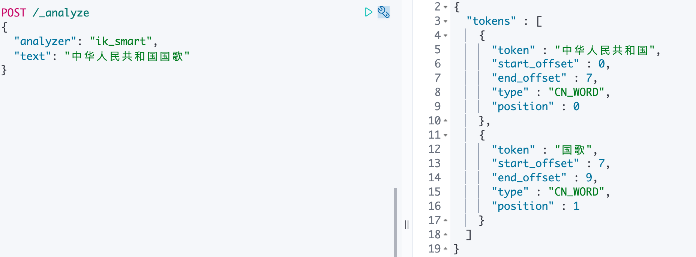
1 2 3 4 5 POST /_analyze { "analyzer": "ik_max_word", "text": "中华人民" }
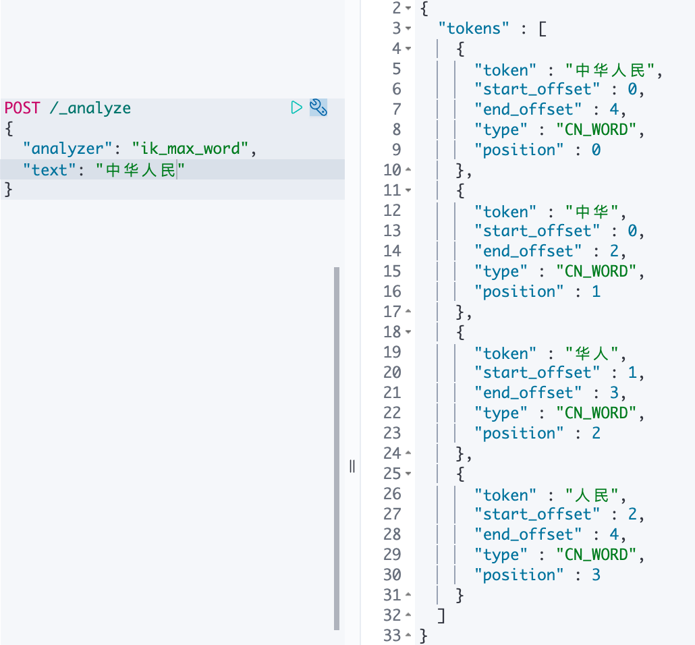
扩展词、停用词配置 IK支持自定义扩展词典和停用词典
**扩展词典**就是有些词并不是关键词,但是也希望被ES用来作为检索的关键词,可以将这些词加入扩展词典。
**停用词典**就是有些词是关键词,但是出于业务场景不想使用这些关键词被检索到，可以将这些词放入停用词典。
定义扩展词典和停用词典可以修改IK分词器中config目录中IKAnalyzer.cfg.xml这个文件。
1 2 3 4 5 6 7 8 9 10 11 12 13 14 15 16 17 18 19 1. 修改vim IKAnalyzer.cfg.xml <?xml version="1.0" encoding="UTF-8"?> <!DOCTYPE properties SYSTEM "http://java.sun.com/dtd/properties.dtd"> <properties> <comment>IK Analyzer 扩展配置</comment> <!--用户可以在这里配置自己的扩展字典 --> <entry key="ext_dict">ext_dict.dic</entry> <!--用户可以在这里配置自己的扩展停止词字典--> <entry key="ext_stopwords">ext_stopword.dic</entry> </properties> 2. 在ik分词器目录下config目录中创建ext_dict.dic文件 编码一定要为UTF-8才能生效 vim ext_ dict.dic 加入扩展词即可3. 在ik分词器目录下config目录中创建ext_stopword.dic文件 vim ext_ stopword.dic 加入停用词即可4.重启es生效
注意: 词典的编码必须为UTF-8，否则无法生效!
过滤查询 过滤查询 过滤查询，其实准确来说，ES中的查询操作分为2种: 查询(query)和过滤(filter)。查询即是之前提到的query查询，它 (查询)默认会计算每个返回文档的得分，然后根据得分排序。而过滤(filter)只会筛选出符合的文档，并不计算 得分，而且它可以缓存文档 。所以，单从性能考虑，过滤比查询更快。 换句话说**过滤适合在大范围筛选数据，而查询则适合精确匹配数据。一般应用时， 应先使用过滤操作过滤数据， 然后使用查询匹配数据。**
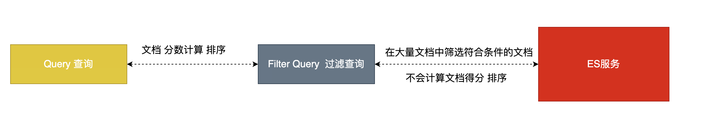
使用 1 2 3 4 5 6 7 8 9 10 GET /ems/emp/_search { "query": { "bool": { "must": [ {"match_all": {}} //查询条件 ], "filter": {....} //过滤条件 } }
注意:
在执行 filter 和 query 时,先执行 filter 在执行 query
Elasticsearch会自动缓存经常使用的过滤器，以加快性能。
类型
常见过滤类型有: term 、 terms 、ranage、exists、ids等filter。
term 、 terms Filter 1 2 3 4 5 6 7 8 9 10 11 12 13 14 15 16 17 18 19 20 21 22 23 24 25 26 27 28 29 30 31 32 33 34 35 36 37 38 39 40 41 GET /ems/emp/_search # 使用term过滤 { "query": { "bool": { "must": [ {"term": { "name": { "value": "小黑" } }} ], "filter": { "term": { "content":"框架" } } } } } GET /dangdang/book/_search #使用terms过滤 { "query": { "bool": { "must": [ {"term": { "name": { "value": "中国" } }} ], "filter": { "terms": { "content":[ "科技", "声音" ] } } } } }
ranage filter 1 2 3 4 5 6 7 8 9 10 11 12 13 14 15 16 17 18 19 20 21 22 GET /ems/emp/_search { "query": { "bool": { "must": [ {"term": { "name": { "value": "中国" } }} ], "filter": { "range": { "age": { "gte": 7, "lte": 20 } } } } } }
exists filter
过滤存在指定字段,获取字段不为空的索引记录使用
1 2 3 4 5 6 7 8 9 10 11 12 13 14 15 16 17 18 19 GET /ems/emp/_search { "query": { "bool": { "must": [ {"term": { "name": { "value": "中国" } }} ], "filter": { "exists": { "field":"aaa" } } } } }
ids filter
过滤含有指定字段的索引记录
1 2 3 4 5 6 7 8 9 10 11 12 13 14 15 16 17 18 19 GET /ems/emp/_search { "query": { "bool": { "must": [ {"term": { "name": { "value": "中国" } }} ], "filter": { "ids": { "values": ["1","2","3"] } } } } }
整合应用 引入依赖 1 2 3 4 <dependency > <groupId > org.springframework.boot</groupId > <artifactId > spring-boot-starter-data-elasticsearch</artifactId > </dependency >
配置客户端 1 2 3 4 5 6 7 8 9 10 11 @Configuration public class RestClientConfig extends AbstractElasticsearchConfiguration { @Override @Bean public RestHighLevelClient elasticsearchClient () { final ClientConfiguration clientConfiguration = ClientConfiguration.builder() .connectedTo("192.168.58.128:9200" ) .build(); return RestClients.create(clientConfiguration).rest(); } }
客户端对象
ElasticsearchOperations
RestHighLevelClient 推荐
ElasticsearchOperations
特点: 始终使用面向对象方式操作 ES
索引: 用来存放相似文档集合
映射: 用来决定放入文档的每个字段以什么样方式录入到 ES 中 字段类型 分词器..
文档: 可以被索引最小单元 json 数据格式
相关注解 1 2 3 4 5 6 7 8 9 10 11 12 13 14 15 16 17 18 @Document(indexName = "products", createIndex = true) public class Product { @Id private Integer id; @Field(type = FieldType.Keyword) private String title; @Field(type = FieldType.Float) private Double price; @Field(type = FieldType.Text) private String description; } -- indexName属性: 创建索引的名称 -- createIndex属性: 是否创建索引 -- type: 用来指定字段类型
索引文档 1 2 3 4 5 6 7 8 9 @Test public void testCreate () throws IOException { Product product = new Product (); product.setId(1 ); product.setTitle("怡宝矿泉水" ); product.setPrice(129.11 ); product.setDescription("我们喜欢喝矿泉水...." ); elasticsearchOperations.save(product); }
删除文档 1 2 3 4 5 6 7 @Test public void testDelete () { Product product = new Product (); product.setId(1 ); String delete = elasticsearchOperations.delete(product); System.out.println(delete); }
查询文档 1 2 3 4 5 @Test public void testGet () { Product product = elasticsearchOperations.get("1" , Product.class); System.out.println(product); }
更新文档 1 2 3 4 5 6 7 8 9 @Test public void testUpdate () { Product product = new Product (); product.setId(1 ); product.setTitle("怡宝矿泉水" ); product.setPrice(129.11 ); product.setDescription("我们喜欢喝矿泉水,你们喜欢吗...." ); elasticsearchOperations.save(product); }
删除所有 1 2 3 4 @Test public void testDeleteAll () { elasticsearchOperations.delete(Query.findAll(), Product.class); }
查询所有 1 2 3 4 5 6 7 8 9 10 @Test public void testFindAll () { SearchHits<Product> productSearchHits = elasticsearchOperations.search(Query.findAll(), Product.class); productSearchHits.forEach(productSearchHit -> { System.out.println("id: " + productSearchHit.getId()); System.out.println("score: " + productSearchHit.getScore()); Product product = productSearchHit.getContent(); System.out.println("product: " + product); }); }
RestHighLevelClient 创建索引映射 1 2 3 4 5 6 7 8 9 10 11 12 13 14 15 16 17 18 19 20 21 22 23 @Test public void testCreateIndex () throws IOException { CreateIndexRequest createIndexRequest = new CreateIndexRequest ("fruit" ); createIndexRequest.mapping("{\n" + " \"properties\": {\n" + " \"title\":{\n" + " \"type\": \"keyword\"\n" + " },\n" + " \"price\":{\n" + " \"type\": \"double\"\n" + " },\n" + " \"created_at\":{\n" + " \"type\": \"date\"\n" + " },\n" + " \"description\":{\n" + " \"type\": \"text\"\n" + " }\n" + " }\n" + " }\n" , XContentType.JSON); CreateIndexResponse createIndexResponse = restHighLevelClient.indices().create(createIndexRequest, RequestOptions.DEFAULT); System.out.println(createIndexResponse.isAcknowledged()); restHighLevelClient.close(); }
索引文档 1 2 3 4 5 6 7 8 9 10 11 12 @Test public void testIndex () throws IOException { IndexRequest indexRequest = new IndexRequest ("fruit" ); indexRequest.source("{\n" + " \"id\" : 1,\n" + " \"title\" : \"蓝月亮\",\n" + " \"price\" : 123.23,\n" + " \"description\" : \"这个洗衣液非常不错哦！\"\n" + " }" ,XContentType.JSON); IndexResponse index = restHighLevelClient.index(indexRequest, RequestOptions.DEFAULT); System.out.println(index.status()); }
更新文档 1 2 3 4 5 6 7 @Test public void testUpdate () throws IOException { UpdateRequest updateRequest = new UpdateRequest ("fruit" ,"qJ0R9XwBD3J1IW494-Om" ); updateRequest.doc("{\"title\":\"好月亮\"}" ,XContentType.JSON); UpdateResponse update = restHighLevelClient.update(updateRequest, RequestOptions.DEFAULT); System.out.println(update.status()); }
删除文档 1 2 3 4 5 6 @Test public void testDelete () throws IOException { DeleteRequest deleteRequest = new DeleteRequest ("fruit" ,"1" ); DeleteResponse delete = restHighLevelClient.delete(deleteRequest, RequestOptions.DEFAULT); System.out.println(delete.status()); }
基于 id 查询文档 1 2 3 4 5 6 @Test public void testGet () throws IOException { GetRequest getRequest = new GetRequest ("fruit" ,"1" ); GetResponse getResponse = restHighLevelClient.get(getRequest, RequestOptions.DEFAULT); System.out.println(getResponse.getSourceAsString()); }
查询所有 1 2 3 4 5 6 7 8 9 10 11 12 13 @Test public void testSearch () throws IOException { SearchRequest searchRequest = new SearchRequest ("fruit" ); SearchSourceBuilder sourceBuilder = new SearchSourceBuilder (); sourceBuilder.query(QueryBuilders.matchAllQuery()); searchRequest.source(sourceBuilder); SearchResponse searchResponse = restHighLevelClient.search(searchRequest, RequestOptions.DEFAULT); SearchHit[] hits = searchResponse.getHits().getHits(); for (SearchHit hit : hits) { System.out.println(hit.getSourceAsString()); } }
综合查询 1 2 3 4 5 6 7 8 9 10 11 12 13 14 15 16 17 18 19 20 21 @Test public void testSearch () throws IOException { SearchRequest searchRequest = new SearchRequest ("fruit" ); SearchSourceBuilder sourceBuilder = new SearchSourceBuilder (); sourceBuilder .from(0 ) .size(2 ) .sort("price" , SortOrder.DESC) .fetchSource(new String []{"title" },new String []{}) .highlighter(new HighlightBuilder ().field("description" ).requireFieldMatch(false ).preTags("<span style='color:red;'>" ).postTags("</span>" )) .query(QueryBuilders.termQuery("description" ,"错" )); searchRequest.source(sourceBuilder); SearchResponse searchResponse = restHighLevelClient.search(searchRequest, RequestOptions.DEFAULT); System.out.println("总条数: " +searchResponse.getHits().getTotalHits().value); SearchHit[] hits = searchResponse.getHits().getHits(); for (SearchHit hit : hits) { System.out.println(hit.getSourceAsString()); Map<String, HighlightField> highlightFields = hit.getHighlightFields(); highlightFields.forEach((k,v)-> System.out.println("key: " +k + " value: " +v.fragments()[0 ])); } }
聚合查询 简介 聚合：英文为Aggregation，是es除搜索功能外提供的针对es数据做统计分析的功能 。聚合有助于根据搜索查询提供聚合数据。聚合查询是数据库中重要的功能特性，ES作为搜索引擎兼数据库，同样提供了强大的聚合分析能力。它基于查询条件来对数据进行分桶、计算的方法。有点类似于 SQL 中的 group by 再加一些函数方法的操作。
注意事项：text类型是不支持聚合的。
测试数据 1 2 3 4 5 6 7 8 9 10 11 12 13 14 15 16 17 18 19 20 21 22 23 24 25 26 27 28 29 30 31 32 33 34 35 36 # 创建索引 index 和映射 mapping PUT /fruit { "mappings" : { "properties" : { "title" : { "type" : "keyword" } , "price" : { "type" : "double" } , "description" : { "type" : "text" , "analyzer" : "ik_max_word" } } } } # 放入测试数据 PUT /fruit/_bulk { "index" : { } } { "title" : "面包" , "price" : 19.9 , "description" : "小面包非常好吃" } { "index" : { } } { "title" : "旺仔牛奶" , "price" : 29.9 , "description" : "非常好喝" } { "index" : { } } { "title" : "日本豆" , "price" : 19.9 , "description" : "日本豆非常好吃" } { "index" : { } } { "title" : "小馒头" , "price" : 19.9 , "description" : "小馒头非常好吃" } { "index" : { } } { "title" : "大辣片" , "price" : 39.9 , "description" : "大辣片非常好吃" } { "index" : { } } { "title" : "透心凉" , "price" : 9.9 , "description" : "透心凉非常好喝" } { "index" : { } } { "title" : "小浣熊" , "price" : 19.9 , "description" : "童年的味道" } { "index" : { } } { "title" : "海苔" , "price" : 19.9 , "description" : "海的味道" }
使用 根据某个字段分组 1 2 3 4 5 6 7 8 9 10 11 12 13 14 15 16 17 18 # 根据某个字段进行分组 统计数量 GET /fruit/_search { "query": { "term": { "description": { "value": "好吃" } } }, "aggs": { "price_group": { "terms": { "field": "price" } } } }
求最大值 1 2 3 4 5 6 7 8 9 10 11 # 求最大值 GET /fruit/_search { "aggs": { "price_max": { "max": { "field": "price" } } } }
求最小值 1 2 3 4 5 6 7 8 9 10 11 # 求最小值 GET /fruit/_search { "aggs": { "price_min": { "min": { "field": "price" } } } }
求平均值 1 2 3 4 5 6 7 8 9 10 11 # 求平均值 GET /fruit/_search { "aggs": { "price_agv": { "avg": { "field": "price" } } } }
求和 1 2 3 4 5 6 7 8 9 10 11 # 求和 GET /fruit/_search { "aggs": { "price_sum": { "sum": { "field": "price" } } } }
整合应用 1 2 3 4 5 6 7 8 9 10 11 12 13 14 15 @Test public void testAggsPrice () throws IOException { SearchRequest searchRequest = new SearchRequest ("fruit" ); SearchSourceBuilder sourceBuilder = new SearchSourceBuilder (); sourceBuilder.aggregation(AggregationBuilders.terms("group_price" ).field("price" )); searchRequest.source(sourceBuilder); SearchResponse searchResponse = restHighLevelClient.search(searchRequest, RequestOptions.DEFAULT); Aggregations aggregations = searchResponse.getAggregations(); ParsedDoubleTerms terms = aggregations.get("group_price" ); List<? extends Terms .Bucket> buckets = terms.getBuckets(); for (Terms.Bucket bucket : buckets) { System.out.println(bucket.getKey() + ", " + bucket.getDocCount()); } }
1 2 3 4 5 6 7 8 9 10 11 12 13 14 15 @Test public void testAggsTitle () throws IOException { SearchRequest searchRequest = new SearchRequest ("fruit" ); SearchSourceBuilder sourceBuilder = new SearchSourceBuilder (); sourceBuilder.aggregation(AggregationBuilders.terms("group_title" ).field("title" )); searchRequest.source(sourceBuilder); SearchResponse searchResponse = restHighLevelClient.search(searchRequest, RequestOptions.DEFAULT); Aggregations aggregations = searchResponse.getAggregations(); ParsedStringTerms terms = aggregations.get("group_title" ); List<? extends Terms .Bucket> buckets = terms.getBuckets(); for (Terms.Bucket bucket : buckets) { System.out.println(bucket.getKey() + ", " + bucket.getDocCount()); } }
1 2 3 4 5 6 7 8 9 10 11 @Test public void testAggsSum () throws IOException { SearchRequest searchRequest = new SearchRequest ("fruit" ); SearchSourceBuilder sourceBuilder = new SearchSourceBuilder (); sourceBuilder.aggregation(AggregationBuilders.sum("sum_price" ).field("price" )); searchRequest.source(sourceBuilder); SearchResponse searchResponse = restHighLevelClient.search(searchRequest, RequestOptions.DEFAULT); ParsedSum parsedSum = searchResponse.getAggregations().get("sum_price" ); System.out.println(parsedSum.getValue()); }
集群 Cluster 相关概念 集群<cluster> 一个集群就是由一个或多个节点组织在一起，它们共同持有你整个的数据，并一起提供索引和搜索功能。一个集群由一个唯一的名字标识，这个名字默认就是elasticsearch。这个名字是重要的，因为一个节点只能通过指定某个集群的名字，来加入这个集群。
节点<node> 一个节点是你集群中的一个服务器，作为集群的一部分，它存储你的数据，参与集群的索引和搜索功能。和集群类似，一个节点也是由一个名字来标识的，默认情况下，这个名字是一个随机的漫威漫画角色的名字，这个名字会在启动的时候赋予节点。
索引<Index> 一组相似文档的集合
映射<Mapping> 用来定义索引存储文档的结构如：字段、类型等。
文档<Document> 索引中一条记录,可以被索引的最小单元
分片<shards> Elasticsearch提供了将索引划分成多份的能力，这些份就叫做分片。当你创建一个索引的时候，你可以指定你想要的分片的数量。每个分片本身也是一个功能完善并且独立的“索引”，这个“索引”可以被放置 到集群中的任何节点上。
复制<replicas> Index的分片中一份或多份副本。
搭建集群 集群规划 1 2 3 4 5 # 1.准备3个ES节点和一个kibana 节点 ES 9200 9300 - web: 9201 tcp:9301 node-1 elasticsearch.yml - web: 9202 tcp:9302 node-2 elasticsearch.yml- web: 9203 tcp:9303 node-3 elasticsearch.yml- kibana: 5602
注意
所有节点集群名称必须一致 cluster.name
每个节点必须有一个唯一名字 node.name
开启每个节点远程连接 network.host: 0.0.0.0
指定使用 IP地址进行集群节点通信 network.publish_host:
修改 web 端口 tcp 端口 http.port: transport.tcp.port
指定集群中所有节点通信列表 discovery.seed_hosts: node-1 node-2 node-3 相同
允许集群初始化 master 节点节点数: cluster.initial_master_nodes: [“node-1”, “node-2”,”node-3”]
集群最少几个节点可用 gateway.recover_after_nodes: 2
开启每个节点跨域访问http.cors.enabled: true http.cors.allow-origin: “*”
配置文件 1 2 3 4 5 6 7 8 9 10 11 12 13 14 15 16 17 18 19 20 21 cluster.name: es-cluster node.name: node-1 network.host: 0.0 .0 .0 network.publish_host: 192.168 .124 .3 http.port: 9201 transport.tcp.port: 9301 discovery.seed_hosts: ["192.168.124.3:9301" , "192.168.124.3:9302" ,"192.168.124.3:9303" ]cluster.initial_master_nodes: ["node-1" , "node-2" ,"node-3" ]gateway.recover_after_nodes: 2 http.cors.enabled: true http.cors.allow-origin: "*"
1 2 3 4 5 6 7 8 9 10 11 12 13 14 15 16 17 18 19 20 21 cluster.name: es-cluster node.name: node-2 network.host: 0.0 .0 .0 network.publish_host: 192.168 .124 .3 http.port: 9202 transport.tcp.port: 9302 discovery.seed_hosts: ["192.168.124.3:9301" , "192.168.124.3:9302" ,"192.168.124.3:9303" ]cluster.initial_master_nodes: ["node-1" , "node-2" ,"node-3" ]gateway.recover_after_nodes: 2 http.cors.enabled: true http.cors.allow-origin: "*"
1 2 3 4 5 6 7 8 9 10 11 12 13 14 15 16 17 18 19 20 21 cluster.name: es-cluster node.name: node-2 network.host: 0.0 .0 .0 network.publish_host: 192.168 .124 .3 http.port: 9202 transport.tcp.port: 9302 discovery.seed_hosts: ["192.168.124.3:9301" , "192.168.124.3:9302" ,"192.168.124.3:9303" ]cluster.initial_master_nodes: ["node-1" , "node-2" ,"node-3" ]gateway.recover_after_nodes: 2 http.cors.enabled: true http.cors.allow-origin: "*"
编写 compose 文件 1 2 3 4 5 6 7 8 9 10 11 12 13 14 15 16 17 18 19 20 21 22 23 24 25 26 27 28 29 30 31 32 33 34 35 36 37 38 39 40 41 42 43 44 45 46 47 48 49 50 51 52 53 54 version: "3.8" networks: escluster: services: es01: image: elasticsearch:7.14.0 ports: - "9201:9201" - "9301:9301" networks: - "escluster" volumes: - ./node-1/data:/usr/share/elasticsearch/data - ./node-1/config/elasticsearch.yml:/usr/share/elasticsearch/config/elasticsearch.yml - ./node-1/plugins/ik:/usr/share/elasticsearch/plugins/ik environment: - "ES_JAVA_OPTS=-Xms512m -Xmx512m" es02: image: elasticsearch:7.14.0 ports: - "9202:9202" - "9302:9302" networks: - "escluster" volumes: - ./node-2/data:/usr/share/elasticsearch/data - ./node-2/config/elasticsearch.yml:/usr/share/elasticsearch/config/elasticsearch.yml - ./node-2/plugins/ik:/usr/share/elasticsearch/plugins/ik environment: - "ES_JAVA_OPTS=-Xms512m -Xmx512m" es03: image: elasticsearch:7.14.0 ports: - "9203:9203" - "9303:9303" networks: - "escluster" volumes: - ./node-3/data:/usr/share/elasticsearch/data - ./node-3/config/elasticsearch.yml:/usr/share/elasticsearch/config/elasticsearch.yml - ./node-3/plugins/ik:/usr/share/elasticsearch/plugins/ik environment: - "ES_JAVA_OPTS=-Xms512m -Xmx512m" kibana: image: kibana:7.14.0 ports: - "5602:5601" networks: - "escluster" volumes: - ./kibana.yml:/usr/share/kibana/config/kibana.yml
kibana 配置文件 1 2 3 4 5 server.host: "0" server.shutdownTimeout: "5s" elasticsearch.hosts: [ "http://192.168.124.3:9201" ] monitoring.ui.container.elasticsearch.enabled: true
查看集群状态 1 http://10.102.115.3:9200/_cat/health?v
安装head插件 1 2 3 4 5 6 7 8 9 10 11 12 13 14 15 16 17 18 19 20 21 22 23 24 25 26 27 28 29 30 31 32 1. 访问github网站 搜索: elasticsearch-head 插件 2. 安装git yum install git 3. 将elasticsearch-head下载到本地 git clone git://github.com/mobz/elasticsearch-head.git 4. 安装nodejs #注意: 没有wget的请先安装yum install -y wget wget http://cdn.npm.taobao.org/dist/node/latest-v8.x/node-v8.1.2-linux-x64.tar.xz 5. 解压缩nodejs xz -d node-v10.15.3-linux-arm64.tar.xz tar -xvf node-v10.15.3-linux-arm64.tar 6. 配置环境变量 mv node-v10.15.3-linux-arm64 nodejs mv nodejs /usr/nodejs vim /etc/profile export NODE_HOME=/usr/nodejs export PATH=$PATH:$JAVA_HOME/bin:$NODE_HOME/bin 7. 进入elasticsearch-head的目录 npm config set registry https://registry.npm.taobao.org npm install npm run start 8. 启动访问head插件 默认端口9100 http://ip:9100 查看集群状态
 微信
微信 支付宝
支付宝